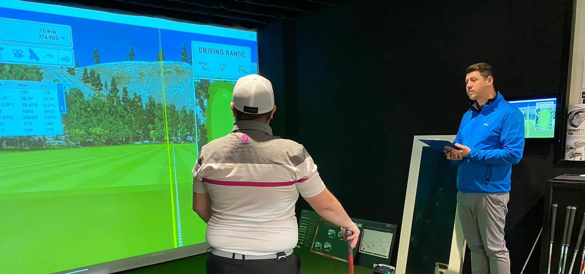
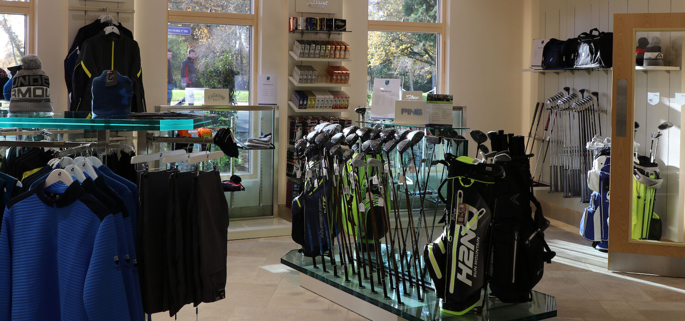
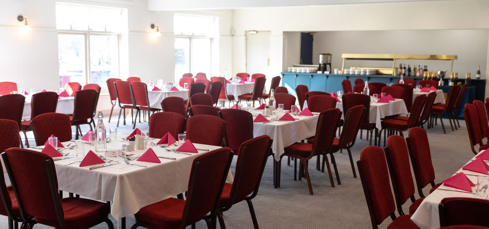
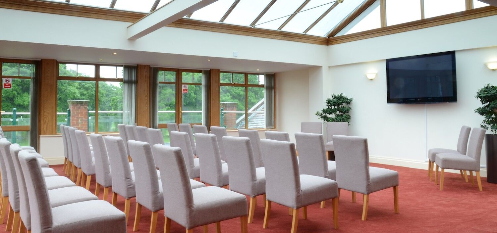
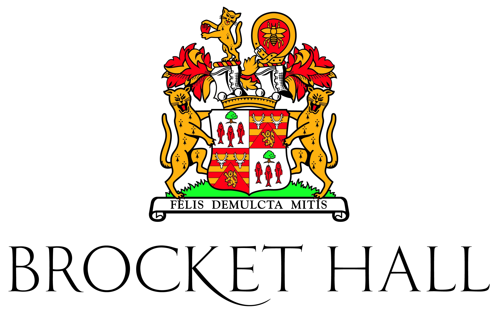
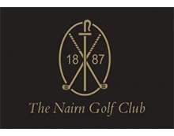
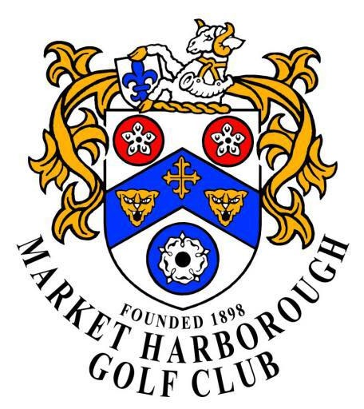
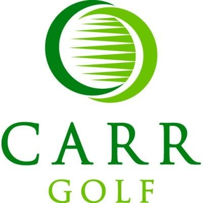
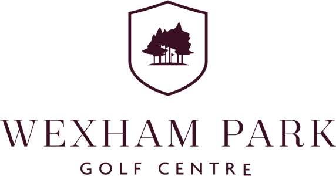
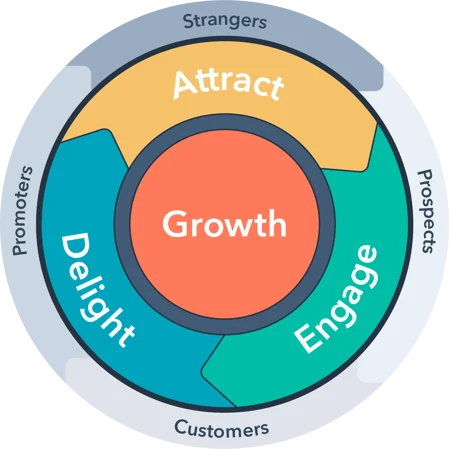

Green fee revenue
Dynamic pricing, direct booking campaigns and monthly insight to optimise visitor golf demand across all three courses.
 The Revenue ClubEnhanced Service proposal
The Revenue ClubEnhanced Service proposal
Prepared for Frilford Heath Golf Club
The Revenue Club will help Frilford Heath get full value from its technology, campaigns and customer data by becoming the hands-on service partner that keeps pricing, CRM, lead generation, follow-up and reporting on track.
Why this matters
Dynamic pricing, direct booking campaigns and monthly insight to optimise visitor golf demand across all three courses.
CRM-led journeys that capture interest, automate follow-up, score intent and help turn visitors into prospective members.
Lead generation, forms, pipelines and follow-up tasks for society, corporate golf and higher-value group enquiries.
Campaigns and CRM workflows for meetings, private dining, functions and hospitality opportunities across the clubhouse.
HubSpot, booking data, forms, dashboards and campaigns only create value when they are configured, used and reviewed consistently.
TRC keeps the rhythm moving with weekly action, clear ownership, a can-do attitude and the discipline to follow through.
Estate-led storytelling





The Enhanced Service
Without the right service rhythm, systems do not get used to their potential, follow-up becomes inconsistent, reports are not acted on and opportunities slip away. The Enhanced Service gives Frilford Heath technical expertise, sales and marketing delivery, and a proactive team that keeps momentum alive.
We understand the systems behind golf club growth: CRM, booking journeys, lead capture, automation, reporting, tracking, campaign setup and data quality. We make the tools usable and commercially relevant.
We bring the practical skills to generate demand, package offers, manage campaigns, create follow-up journeys and turn interest into sales conversations for green fees, membership, societies and events.
We act like a valuable member of the team: responsive, organised, positive and focused on keeping things moving. When something needs doing, we help make sure it gets done.
TRC wraps revenue management, CRM and campaign delivery into one accountable operating rhythm.
Golf course revenue management for visitor green fees: tee sheet analysis, seasonal pricing, weekly rate adjustments, fortnightly visitor emails, weekly social content and monthly REPORTS.GOLF insight.
Core ServiceLead capture, forms, contact segmentation, automated follow-up, deal pipelines, sales tasks, website visitor tracking and reporting for membership, golf days, venue sales and repeat customer journeys.
CRM ServiceGoal-led Google and Meta campaigns, targeting, bespoke creative, conversion tracking, continuous optimisation and clear campaign dashboards covering ROAS, leads, clicks and conversion performance.
Marketing ClubWeekly green fee rate updates, winter, shoulder and summer pricing strategy, competitor analysis and board-ready revenue reporting.
Website forms, automated enquiry responses, visitor-to-member deal creation, lead scoring and sales task creation for the Frilford team.
Paid Google and Meta campaigns, bespoke assets, audience targeting, conversion tracking and ongoing performance refinement.
CRM position
The Enhanced Service is not dependent on one specific CRM. We can support Frilford Heath with the system the club chooses, provided it can support the right data, workflows, reporting and follow-up process. Our role is to make sure the CRM becomes a working sales and marketing engine, not another under-used piece of software.
In our opinion, HubSpot is the strongest platform for the kind of joined-up growth Frilford Heath is looking for: lead capture, segmentation, marketing automation, sales pipelines, task management, reporting and customer journey visibility in one place.
We are a HubSpot Platinum Partner, but the real value is how we combine platform knowledge with golf-specific sales and marketing delivery. HubSpot supplies the engine; TRC provides the strategy, setup, process and day-to-day momentum.
If Frilford Heath chooses another CRM, we will still bring the same service standards: clean process design, campaign execution, lead follow-up, reporting discipline and practical support that keeps the team moving.
Enhanced Service partner board





Operating model: the flywheel effect
Every visitor, enquiry, society organiser, event lead and prospective member should strengthen Frilford Heath's customer base. The Enhanced Service uses CRM, reporting and consistent marketing to collect contact data, measure behaviour, market back to the right audiences and build momentum over time.
The aim is a snowball effect: better data creates better campaigns, better campaigns create more bookings and enquiries, and each interaction gives Frilford a larger, more loyal and more reliable audience to grow from.

Configure the systems, tracking, pricing rules, campaigns and CRM journeys so the foundations are right.
Run the regular marketing, sales and revenue actions that create demand and keep opportunities moving.
Work with the Frilford team so tasks, follow-up, data and decisions do not fall between departments.
Review performance, spot gaps, recommend action and keep refining the system month after month.
Planned and published content that keeps Frilford visible, relevant and active across priority audiences.
Consistent email activity to visitor, member, society, event and prospect segments so the database keeps working.
Google and Meta activity managed continuously, excluding ad spend, with optimisation around audience, creative and conversion.
REPORTS.GOLF, CRM and campaign dashboards reviewed and translated into clear actions for the next cycle.
Regular contact, action tracking, support and practical coordination so Frilford has a proactive partner keeping momentum alive.
Landing page, offer, tracking and content updates that keep campaigns accurate and conversion paths working.
Data quality, segmentation, workflows, pipelines, task rules and follow-up routines maintained so the system gets used properly.
Green fee performance, availability, pace, weather, booking behaviour and demand reviewed so pricing decisions stay active.
First 60 days
Review the systems, data, tee sheet performance, marketing activity, enquiry journeys, team responsibilities and the places where things currently get missed.
Configure CRM, forms, deal stages, task rules, pricing structures, campaign goals, tracking and reporting so each workflow has a clear owner and purpose.
Start weekly rate adjustments, visitor emails, social content, paid campaigns, CRM automation, sales follow-up routines and active team support.
Use REPORTS.GOLF, HubSpot and campaign dashboards to review progress, fix gaps, train users and agree the next practical actions.
Commercial terms
This includes all of the Enhanced Service activity set out above: Core Service, CRM support, Marketing Club delivery, reporting, account management, campaign support and ongoing optimisation.
The service is designed as an ongoing working partnership. There is no annual contract, with a 3 month notice period should Frilford Heath ever wish to cancel.
The setup cost depends on Frilford Heath's CRM choice and package. The range includes extensive setup consultation and multiple onsite training days.
Expected outcome
The Enhanced Service combines expert-led pricing, golf-specific campaign delivery, HubSpot CRM execution and the service levels needed to keep everything on track. Frilford keeps strategic control while TRC brings the technical know-how, sales and marketing skill, accountability and can-do attitude that helps the system perform.